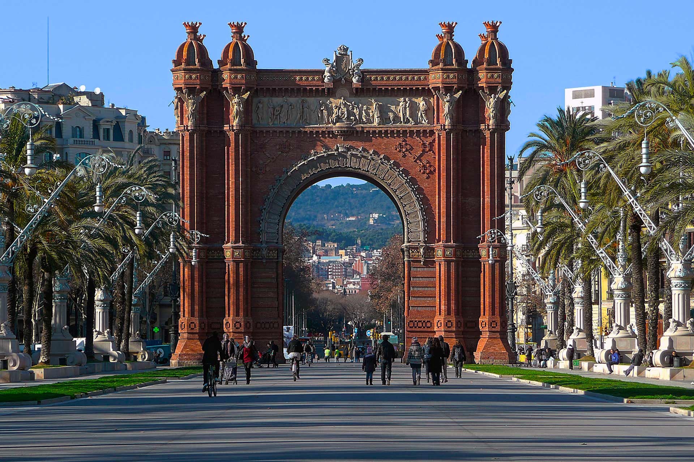

|
Note: Informational occasion of the article - ordinary post of "Radio Liberty" in the social networks about Catalonia and Russia's interests in dealing with Catalan separatists. All my subscribers know I support the movement for the freedom of Catalonia. I always remain against empires, colonies and enslaved peoples. It is a pity that there is no Morten Harket ("a-ha" music band) for Catalonia, who would have influenced on that and who can sing about the problem of secession from Spain (so he helped to East Timor). The entire "civilized" world was built on hype and populism, bureaucracy, lies and hypocrisy. The problem must be published by famous people only, so that will begin to solve it not only in the interests of politicians and big businessmen. As if the United States has no interference - to nowhere and in nothing. They fled from Afghanistan just now. Who knows me I often criticize the Kremlin and Putin. In 90% cases. This case is inсluded in remaining 10%. If the Kremlin is negotiating with Catalans and does not ask the EU, the US, or Spain, then it is doing the right thing. The people of Catalonia have long wanted freedom from Spain and whether the "world community" wants to admit it or not, it is not important. By the way, about Spain. Its constitution and itself violate Article 1 of the "International Covenant on Civil and Political Rights" (adopted on December 16, 1966 by Resolution 2200 (XXI) at the 1496th plenary session of the UN General Assembly). This norm provides the unconditional right of nations to self-determination. But Spain is in the EU and NATO - she can do anything)))). The hardened and primal minds logic of the "civilized world" by Catalonia is as follows: "If a slave wants freedom, he must ask the master for it. The master is a friend of other masters - therefore he has the right to keep slaves." This is a summary of the legal conflict between the valuable opinion of the "civilized world" + the Spanish constitution and the will of free people + international laws. #radio freedom #catalonia #freedomcatalonia #the Kremlin #aha #slavery #USA #EU #Russia |  |